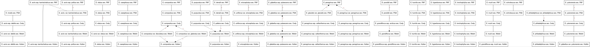

TCM graph: Erigeron

Hover over edges that are marked with * to see notes.
Edge style key:
- Solid black: congruent with (=)
- Dashed black: overlaps (><)
- Dotted black: intersects (∩)
- Dashed black with arrow: <arrow from> is included in <arrow to> (<)
- Solid red: is disjunct from (|)